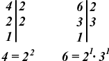

Fracciones
Una fracción representa una parte de un todo que se ha dividido en partes iguales.
Se escribe en la forma:
\(\frac{a}{b}\)
- Numerador (\(a\)): indica cuántas partes tomamos.
- Denominador (\(b\)): indica en cuántas partes iguales se divide el todo.
- El denominador nunca puede ser 0.
Ejemplos:
- \(\frac{3}{4}\): el todo se divide en 4 partes iguales y tomamos 3.
- \(\frac{5}{2}\): indica cinco medios, es decir, dos enteros y medio.
Anteriormente, en otros cursos, las hemos relacionado con repartos como, por ejemplo, para el caso de \(\frac{3}{4}\), una tarta a la que le falta \(\frac{1}{4}\), es decir, que tiene \(\frac{3}{4}\) porciones, como en la siguiente imagen:

Tipos de fracciones
- Fracción propia: numerador menor que el denominador. Ejemplo: \(\frac{2}{5}\)
- Fracción impropia: numerador mayor o igual que el denominador. Ejemplo: \(\frac{7}{4}\)
- Número mixto: combina un número entero y una fracción propia. Ejemplo: \(1\frac{3}{4}\)
Un número mixto es un número que está formado por:
- una parte entera
- y una fracción propia (con numerador menor que el denominador).
Por ejemplo:
\(2 \frac{3}{4}\)
Significa 2 enteros y 3 cuartos más.
Se puede transformar en fracción impropia multiplicando el entero por el denominador y sumando el numerador:
\(2 \frac{3}{4} = \frac{2 \times 4 + 3}{4} = \frac{11}{4}\)
👉 Los números mixtos se usan para expresar cantidades mayores que la unidad de forma más clara.
Fracciones equivalentes
Dos o más fracciones equivalentes representan la misma cantidad, aunque estén escritas de forma distinta.
Para obtener fracciones equivalentes, se multiplica o divide el numerador y el denominador por el mismo número distinto de cero (n).
\(\frac{a}{b} = \frac{a \times n}{b \times n}\)
Ejemplos:
- \(\frac{1}{2} = \frac{2}{4} = \frac{4}{8}\)
- \(\frac{3}{5} = \frac{6}{10}\)
- \(\frac{8}{12} = \frac{2}{3}\)
Aunque los números cambien, la parte del todo es la misma.
¿Para qué sirven?
Las fracciones equivalentes se usan para:
- simplificar fracciones,
- comparar fracciones,
- sumar y restar fracciones con distinto denominador.
Idea clave
Multiplicar o dividir numerador y denominador por el mismo número no cambia el valor de la fracción.
Fracción irreducible
Una fracción irreducible es aquella que no se puede simplificar más, es decir, su numerador y denominador no tienen divisores comunes distintos de 1.
Para simplificar una fracción, se divide el numerador y el denominador entre un mismo número distinto de cero.
Ejemplo
\(\frac{12}{18}\)
Dividimos entre \(6\):
\(\frac{12 \div 6}{18 \div 6} = \frac{2}{3}\)
La fracción \(\frac{2}{3}\) es irreducible.
Comparación de fracciones
Comparar fracciones significa decidir cuál es mayor, menor o si son iguales.
Caso 1: Mismo denominador
Se comparan los numeradores.
Ejemplo:
\(\frac{3}{7} < \frac{5}{7}\)
Caso 2: Distinto denominador
Se igualan los denominadores (mínimo común múltiplo) o se cruzan los productos.
Ejemplo:
\(\frac{2}{3} \; ? \; \frac{3}{5}\)
Multiplicamos en cruz:
\(2 \times 5 = 10\)
\(3 \times 3 = 9\)
Como \(10 > 9\):
\(\frac{2}{3} > \frac{3}{5}\)
La versión de la comparación igualando denominadores implica la reducción a común denominador (utilizando el mínimo común múltiplo) que explicaremos más adelante.
Operaciones con fracciones
Suma y resta
a) Mismo denominador
Se suman o restan los numeradores y se mantiene el denominador.
Ejemplo:
\(\frac{3}{8} + \frac{2}{8} = \frac{5}{8}\)
b) Distinto denominador
- Se calcula el mínimo común múltiplo.
- Se transforman las fracciones.
- Se suman o restan los numeradores.
Ejemplo:
\(\frac{1}{4} + \frac{1}{6}\)

El mínimo común múltiplo requiere los factores comunes y no comunes siempre con el mayor exponente.
\(m.c.m.(4,6)= 2^{2} · 3^{1} = 4 · 3 = 12\)
Para reducir a común denominador debemos saber los factores por los que multiplicar los denominadores para obtener las fracciones equivalentes:
- 12 dividido entre 4 es 3, así que 3 es el valor por el que hay que multiplicar el numerador de la primera fracción.
- 12 dividido entre 6 es 2, así que 2 es el valor por el que hay que multiplicar el numerador de la segunda fracción.
Así pues:
\(\frac{3 ·1}{12} + \frac{2·1}{12} = \frac{3}{12} + \frac{2}{12} = \frac{5}{12}\)
Multiplicación
Se multiplican numeradores entre sí y denominadores entre sí.
Ejemplo:
\(\frac{2}{3} \times \frac{5}{4} = \frac{2 \times 5}{3 \times 3} = \frac{10}{12} = \frac{5}{6}\)
Dividir por una fracción es multiplicar por su inversa.
Ejemplo:
\(\frac{3}{5} : \frac{2}{7} = \frac{3}{5} \times \frac{7}{2} = \frac{3 \times 7}{5 \times 2} = \frac{21}{10}\)
También suele expresarse como multiplicamos en cruz (producto de medios por producto de extremos).
Y, a continuación, un repaso general de las 4 operaciones:
El método de la mariposa es una forma rápida de sumar o restar fracciones con distinto denominador, sin calcular antes el mínimo común múltiplo.
¿Por qué se llama “mariposa”?
Porque al cruzar las multiplicaciones se dibuja una forma parecida a una mariposa 🦋.
Pasos del método
Para sumar o restar:
\(\frac{a}{b} \pm \frac{c}{d}\)
Se multiplican en cruz los numeradores por los denominadores:
\(a \times d\)
\(c \times b\)
Se suman o restan esos resultados.
El denominador es el producto de los dos denominadores: \(b \times d\).
Se simplifica la fracción final si es posible.
Ejemplo (suma)
\(\frac{2}{3} + \frac{1}{4}\)
- \(2 \times 4 = 8\)
- \(1 \times 3 = 3\)
\(\frac{8 + 3}{12} = \frac{11}{12}\)
Ejemplo (resta)
\(\frac{5}{6} - \frac{1}{3}\)
- \(5 \times 3 = 15\)
- \(1 \times 6 = 6\)
\(\frac{15 - 6}{18} = \frac{9}{18} = \frac{1}{2}\)
Importante: El método de la mariposa siempre funciona, pero conviene simplificar al final.
Es un método práctico, aunque en algunos casos el denominador puede ser grande.
Números decimales
Un número decimal representa partes de la unidad divididas en décimas, centésimas, milésimas, etc.
Ejemplos:
- \(0,5\) → cinco décimas
- \(2,34\) → dos unidades, tres décimas y cuatro centésimas
(Aunque algunas personas utilizan la coma decimal en la parte superior del número, ejemplo, 1'2, lo correcto es usarlo en la parte inferior del número 1,2).
Tipos de decimales
- Decimal exacto: termina. Ejemplo: \(0,25\)
- Decimal periódico: se repite indefinidamente (nunca termina).
- Puro: el periodo aparece justo después de la coma decimal:
- \(0,\widehat{36}\) (El \(36\) se repite infinitamente)
- \(0,\widehat{7}\) (El \(7\) se repite infinitamente)
- Mixto: hay unos cuantos números después de la coma decimal y antes del período:
- \(1,2\widehat{54}\) (El \(54\) se repite infinitamente).
- \(2,3\widehat{1}\) (El \(1\) se repite infinitamente).
- Puro: el periodo aparece justo después de la coma decimal:
También existen otros números decimales llamados números irracionales, que se componen de una parte decimal infinita no periódica, es decir, que no se repite a partir de un número, o sea, siempre distinta. Este es el caso de números como \(\pi\), que se darán en otro tema.
Fracciones y números decimales
Las fracciones y los números decimales son dos maneras distintas de representar un mismo número. Muchos decimales pueden escribirse como fracciones y muchas fracciones pueden transformarse en decimales.
Pasar de fracción a número decimal
Para pasar una fracción a decimal, se divide el numerador entre el denominador.
Ejemplos:
- \(\frac{1}{2} = 1 : 2 = 0,5\)
- \(\frac{3}{4} = 3 : 4 = 0,75\)
- \(\frac{2}{3} = 2 : 3 = 0,\widehat{6}\)
Según el resultado, el decimal puede ser:
- Exacto: termina.
- Periódico: tiene una o varias cifras que se repiten indefinidamente.
Pasar de número decimal a fracción
Para pasar de decimal a fracción se obtiene su fracción generatriz, que es la fracción que representa exactamente ese número decimal.
El método depende del tipo de decimal.
Fracción generatriz de un decimal exacto
Un decimal exacto es aquel que tiene un número finito de cifras decimales.
Pasos
- Se escribe el número sin la coma en el numerador.
- En el denominador se pone un 1 seguido de tantos ceros como cifras decimales tenga.
- Se simplifica la fracción si es posible.
Ejemplos
- \(0,6 = \frac{6}{10} = \frac{3}{5}\)
- \(0,75 = \frac{75}{100} = \frac{3}{4}\)
- \(2,125 = \frac{2125}{1000} = \frac{17}{8}\)
Fracción generatriz de un decimal periódico puro
Un decimal periódico puro es aquel en el que todas las cifras decimales se repiten desde el primer decimal.
Pasos
- El numerador es el número que forma el período.
- El denominador es un número formado por tantos 9 como cifras tenga el período.
- Se simplifica la fracción si se puede.
Ejemplos
- \(0,\widehat{3}\)
- El período es \(3\) (una cifra):
- \(0,\widehat{3} = \frac{3}{9} = \frac{1}{3}\)
- \(0,\widehat{45}\)
- El período es \(45\) (dos cifras):
- \(0,\widehat{45} = \frac{45}{99} = \frac{5}{11}\)
Fracción generatriz de un decimal periódico mixto
Un decimal periódico mixto tiene:
- una parte decimal que no se repite (anteperíodo),
- y otra parte que sí se repite (período).
Pasos
-
En el numerador se escribe:
el número formado por anteperíodo + período
menos
el número formado solo por el anteperíodo. -
En el denominador se ponen:
tantos 9 como cifras tenga el período,
y tantos 0 como cifras tenga el anteperíodo. -
Se simplifica la fracción.
Ejemplo 1
\(1,2\widehat{3}\)
- Número con anteperíodo y período: \(123\)
- Número con solo anteperíodo: \(12\)
- Denominador: un \(9\) (una cifra periódica) y un \(0\) (una cifra no periódica) → \(90\)
\(\frac{123 - 12}{90} = \frac{111}{90} = \frac{37}{30}\)
Ejemplo 2
\(0,45\widehat{6}\)
- Número con anteperíodo y período: \(456\)
- Número con solo anteperíodo: \(45\)
- Denominador: un \(9\) y dos ceros → \(900\)
\(\frac{456 - 45}{900} = \frac{411}{900} = \frac{137}{300}\)
Conclusión
- Todo decimal exacto o periódico tiene una fracción generatriz.
- Los decimales exactos y periódicos son números racionales.
- Las fracciones y los decimales son dos formas distintas de expresar el mismo valor numérico.
Los porcentajes como caso especial de fracciones
Un porcentaje expresa una cantidad como una fracción de denominador 100.
La palabra por ciento significa literalmente “de cada 100”.
Por eso, todo porcentaje puede escribirse como una fracción con denominador \(100\) y también como un número decimal.
\(x\% = \frac{x}{100}\)
Relación entre porcentaje, fracción y decimal:
- Porcentaje → fracción: se divide entre \(100\).
- Fracción → porcentaje: se multiplica por \(100\) y se añade el símbolo %.
- Porcentaje → decimal: se divide entre \(100\).
Ejemplos:
- \(25\% = \frac{25}{100} = \frac{1}{4} = 0,25\)
- \(60\% = \frac{60}{100} = \frac{3}{5} = 0,6\)
- \(12,5\% = \frac{12,5}{100} = 0,125 = \frac{1}{8}\)
Interpretación sencilla
Decir que algo es el \(30 %\) de un total significa que tomamos \(30\) partes de cada \(100\) partes iguales.
Por ejemplo:
El \(20 %\) de una clase de \(25\) alumnos es: \(\frac{20}{100} \times 25 = 5\)
Números racionales
Los números racionales son aquellos números que se pueden escribir como una fracción, es decir, como el cociente de dos números enteros, siendo el denominador distinto de cero.
Se representan con la letra \(\mathbb{Q}\).
\(\frac{a}{b} \quad \text{con } a, b \in \mathbb{Z} \text{ y } b \neq 0\)
¿Qué números son racionales?
Son números racionales:
- Los números naturales (\(\mathbb{N}\)): \(1, 2, 3,...\)
- Los números enteros (\(\mathbb{Z}\)):−4,−1,0,3,8,...
- Las fracciones: \(\frac{2}{5}, \frac{-7}{3}, \frac{4}{1},...\)
- Los decimales exactos: \(0'5, 1'25, −2'75,...\)
- Los decimales periódicos (puros y mixtos): \(0'\widehat{6}, 1'2\widehat{3},...\) (aunque la coma debe usarse en la parte inferior, se ha usado en este caso excepcionalmente en la parte superior para facilitar la legibilidad).
Importante: Todo número decimal que termina o que se repite (con período) es un número racional.
\(\mathbb{N}\subseteq\mathbb{Z}\subseteq\mathbb{Q}\)


{kind=link}
{kind=link}
{kind=link}
{kind=link}
{kind=link}